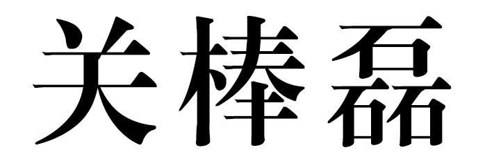
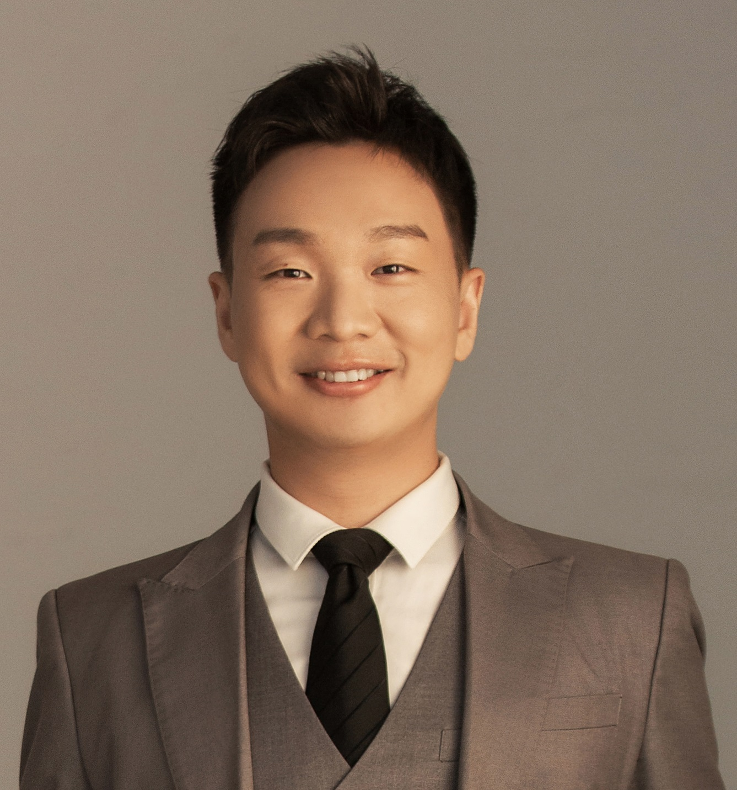

|
Banglei Guan 
Associate Professor
Image Measurement and Visual Navigation Laboratory
Academy of Aerospace Science
National University of Defense Technology (NUDT)
Hunan, China. 410003.
Email: bangle.guan@hotmail.com
|

|
Biography
I am an Associate Professor at National University of Defense Technology (NUDT). I obtained my PhD degree in 2018 at NUDT under the supervision of Prof. Qifeng Yu. During 2016-2017, I was a visiting PhD student at Graz University of Technology, advised by Prof. Friedrich Fraundorfer. Before my PhD, I obtained the B.S. degree in Geomatics Engineering, Wuhan university.
Research Interests
My research interests include computer vision and photogrammetry. Specifically, my work focuses on pose estimation, camera calibration and vision navigation, etc. For more details, please refer to our publication page.
News
-
[2022.09] Four paper was accepted by NeurIPS 2022. Congratulations to Jianhao, Yaoyu, Chaoteng, Rui Zhao, Tong Bu, and Wei Fang!
-
[2022.07] One paper was accepted by ECCV 2022. Congratulations to Jiyuan!
-
[2022.07] Congratulations for Tong Bu for "Top Ten Best Undergraduate Thesis"!
-
[2022.05] One papers was accepted by ICML 2022. Congratulations to Yanqi!
-
[2022.04] One paper was accepted by IJCAI 2022. Congratulations to Shiyan!
-
[2022.01] One paper was accepted by ICASSP 2022. Congratulations to Junwei!
-
[2022.01] One paper was accepted by ICLR 2022. Congratulations to Bu Tong!
-
[2022.01] One paper on Vidar camera was accepted by Engineering!
-
[2021.12] One paper was accepted by Neural Computation. Congratulations to Yijun!
-
[2021.12] One paper was accepted by IEEE Transactions on Computational Imaging. Congratulations to Zhao Jing!
-
[2021.12] One paper on dimensionality reduction of neural spikes was accepted by Cell patterns! Congratulations to Shanshan!
-
[2021.12] Two papers were accepted by AAAI 2022. Congratulations to Ding Gang and Bu Tong!
-
[2021.11] One paper on dissecting dynamical circuits of the brain was accepted by PLOS Computational Biology! Congratulations to Shanshan!
-
[2021.09] One paper on learning of SNNs was accepted by NeurIPS 2021. Congratulations to Fang Wei!
-
[2021.08] One paper on visual neural coding was accepted by Cell patterns! Congratulations to Yajing!
-
[2021.07] Two papers were accepted by ICCV 2021. Congratulations to Fang Wei and Zhao Jing!
-
[2021.04] Two papers were accepted by IJCAI 2021. Congratulations to Jianhao and Yanqi!
-
[2021.03] One papers was accepted by CVPR 2021. Congratulations to Yajing!
-
[2021.01] One papers was accepted by IEEE Transactions on Cybernetics. Congratulations to Shanshan!
Reviewer-Services
-
IEEE Conference on Computer Vision and Pattern Recognition (CVPR)
-
International Conference on Computer Vision (ICCV)
-
International Conference on Robotics and Automation (ICRA)
-
IEEE/RSJ International Conference on Intelligent Robots and Systems (IROS)
-
IEEE Transactions on Instrumentation & Measurement
-
Optic express
-
Applied Optics
Publications
2021
-
Relative Pose Estimation with a Single Affine Correspondence
Banglei Guan*, Ji Zhao*, Zhang Li, Fang Sun, Friedrich Fraundorfer
IEEE Transactions on Cybernetics [pdf] [code]
-
Efficient Recovery of Multi-Camera Motion from Two Affine Correspondences
Banglei Guan*, Ji Zhao*, Daniel Barath, Friedrich Fraundorfer
IEEE International Conference on Robotics and Automation [pdf]
-
Minimal Cases for Computing the Generalized Relative Pose using Affine Correspondences
Banglei Guan, Ji Zhao,Daniel Barath, Friedrich Fraundorfer
IEEE International Conference on Computer Vision [pdf] [code]
2020
-
Minimal Solutions for Relative Pose with a Single Affine Correspondence
Banglei Guan, Ji Zhao, Zhang Li, Fang Sun, Friedrich Fraundorfer
IEEE Conference on Computer Vision and Pattern Recognition [pdf] [code]
2019
-
Self-calibration Approach to Stereo Cameras with Radial Distortion Based on Epipolar Constraint
Banglei Guan*, Yingjian Yu*, Ang Su*, Yang Shang, Qifeng Yu
Applied Optics [pdf]
2018
-
Minimal solutions for the rotational alignment of IMU-camera systems using homography constraints
Banglei Guan*, Qifeng Yu, Friedrich Fraundorfer
Computer Vision and Image Understanding [pdf]
-
Visual odometry using a homography formulation with decoupled rotation and translation estimation using minimal solutions
Banglei Guan, Pascal Vasseur, Cedric Demonceaux, Friedrich Fraundorfer
IEEE International Conference on Robotics and Automation [pdf]
2017
- Planar self-calibration for stereo cameras with radial distortion
Banglei Guan, Yang Shang, Qifeng Yu
Applied Optics [pdf]
Academic Service
PC Member: IJCAI, ACM MM, ISNN
Journal Reviewer: IEEE Transactions on Pattern Analysis and Machine Intelligence, IEEE Transactions on Medical Imaging, IEEE Transactions on Neural Networks and Learning Systems, IEEE Transactions on Cybernetics, IEEE Transactions on Cognitive and Developmental Systems
Neural Networks, Frontiers in Computational Neuroscience, etc.
Conference Reviewer: ICML, NeurIPS, CVPR, ICCV, ECCV, IJCAI, ACM MM, etc.